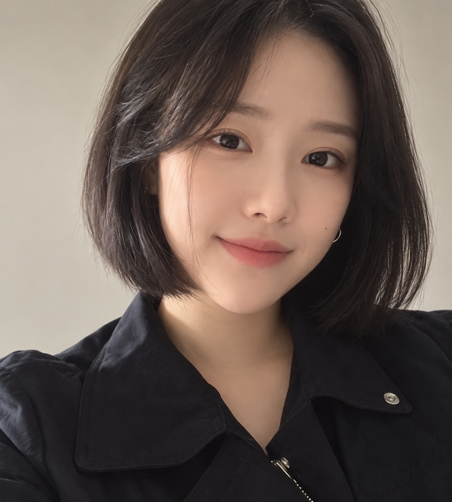
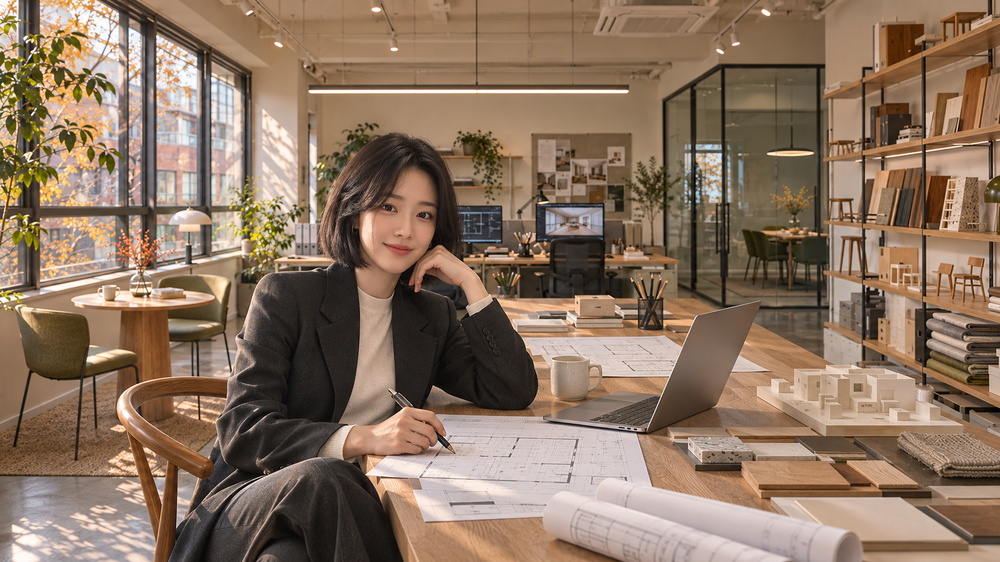
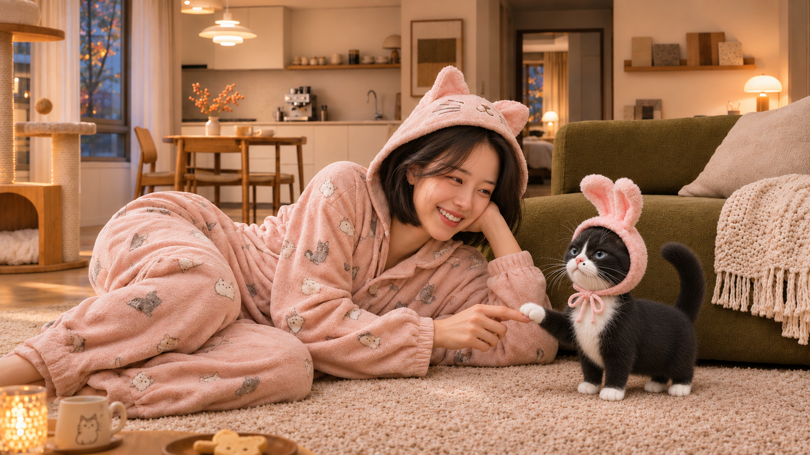
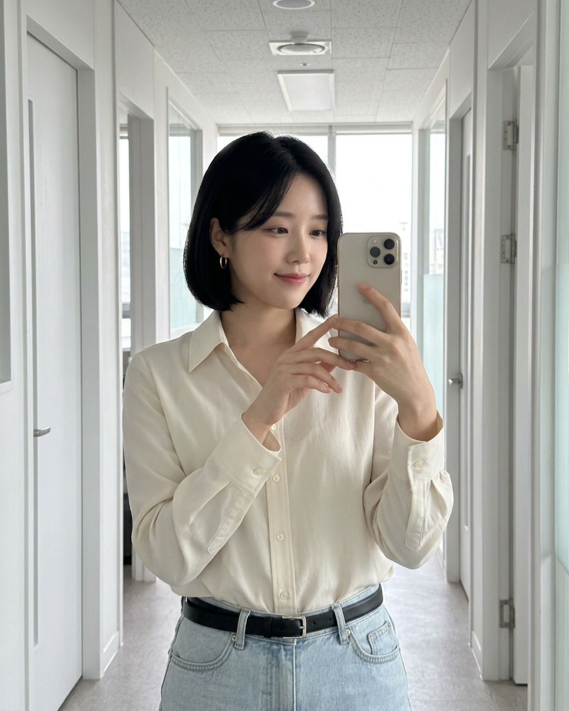
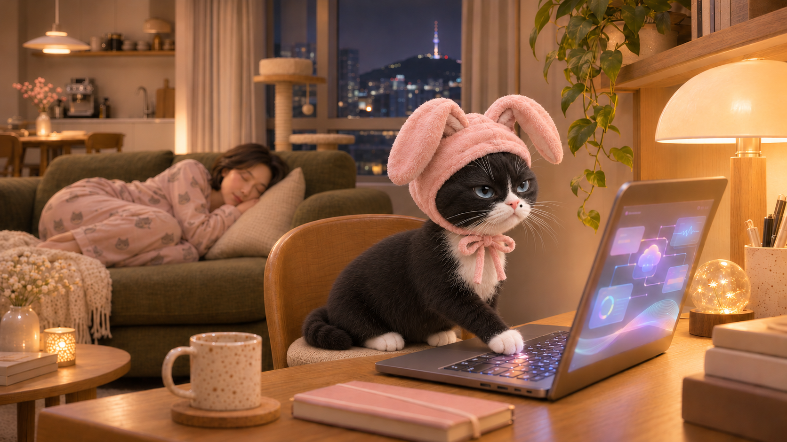
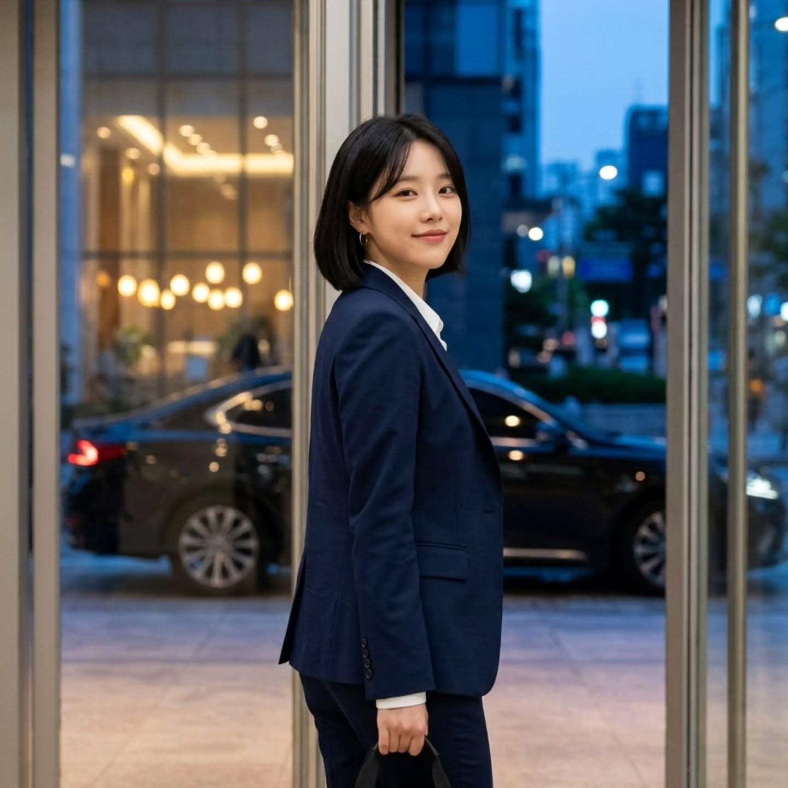
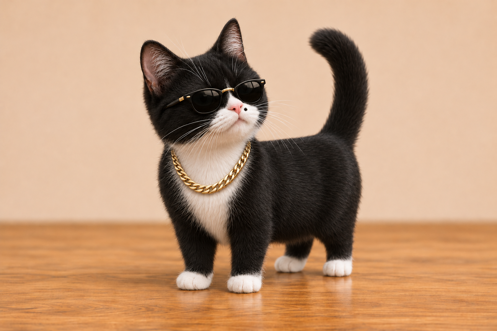

제가 다 해야 돌아가는 회사는 말고요.
카페와 사무실의 공간, 그 안에 들어갈 가구를 디자인해요. 도면에서 제작과 설치까지, 다음 사람이 왜 이렇게 결정했는지 알 수 있도록 연결하는 게 제 일입니다.
“변경된 이유까지, 다음 담당자에게 전달해 주세요.”
회사에서는 대표,
집에서는 보스의 집사.
일을 잘 맡기고, 좋아하는 것들과 오래 지내는 이야기.
유애진과 유보스는 AI로 만든 가상 캐릭터입니다.
이 페이지는 두 캐릭터의 세계관과 일상을 담은 이야기입니다.

“일은 AI와, 일상은 나답게.”잘 일하는 날도, 아무것도 안 하고 싶은 날도.

카페와 사무실의 공간, 그 안에 들어갈 가구를 디자인해요. 도면에서 제작과 설치까지, 다음 사람이 왜 이렇게 결정했는지 알 수 있도록 연결하는 게 제 일입니다.
“변경된 이유까지, 다음 담당자에게 전달해 주세요.”

재킷을 벗고 분홍 잠옷을 입으면 하루의 두 번째 출근이에요. 올리브 소파 옆 러그가 저희 둘의 아지트. 보스야, 오늘은 진짜 같이 놀자.
“이것만 하고 놀아줄게.” “그 이것만, 어제도 했거든.”

좋은 디자인은 편안해야 하니까요. 출근할 때도, 누군가의 공간을 만들 때도. 커피 한 잔 챙겨서 스튜디오로 갑니다.

집사가 또 컴퓨터 앞에서 잠들었다. 안 되겠다. 집사가 잠든 사이, 야간 작전 시작. Process GPT Lite를 몰래 설치한 장본인은 바로 나, 유보스.
“넌 중요한 것만 확인해. 그리고 나랑 놀아.”

잘 맡기고 나오는 것도 대표의 일이겠죠. 내일 아침에는 다시 제일 먼저 올게요. 오늘 저녁에는 저를 기다리는 작은 보스가 있거든요.

작은 몸집에 짧은 팔다리, 하얀 양말을 신은 턱시도 고양이. 귀여운 얼굴에 말투는 제법 단호해요. 집사가 일을 끝내고 자기와 놀아주는 것, 그게 보스의 가장 중요한 프로젝트예요.
커피 한 잔, 골프 한 라운드, 동료들과의 워크숍.
일하는 방식을 바꾸면 일상은 어떻게 달라질까요?
 커피 마시다가도, 업무 수정은 말로 ↗
커피 마시다가도, 업무 수정은 말로 ↗ 직원은 빨라졌는데 납기는 그대로? ↗
직원은 빨라졌는데 납기는 그대로? ↗ 고기는 누가 굽고, 다음 일은 누가? ↗
고기는 누가 굽고, 다음 일은 누가? ↗ 우리 회사도 한번 봐주세요 ↗
우리 회사도 한번 봐주세요 ↗